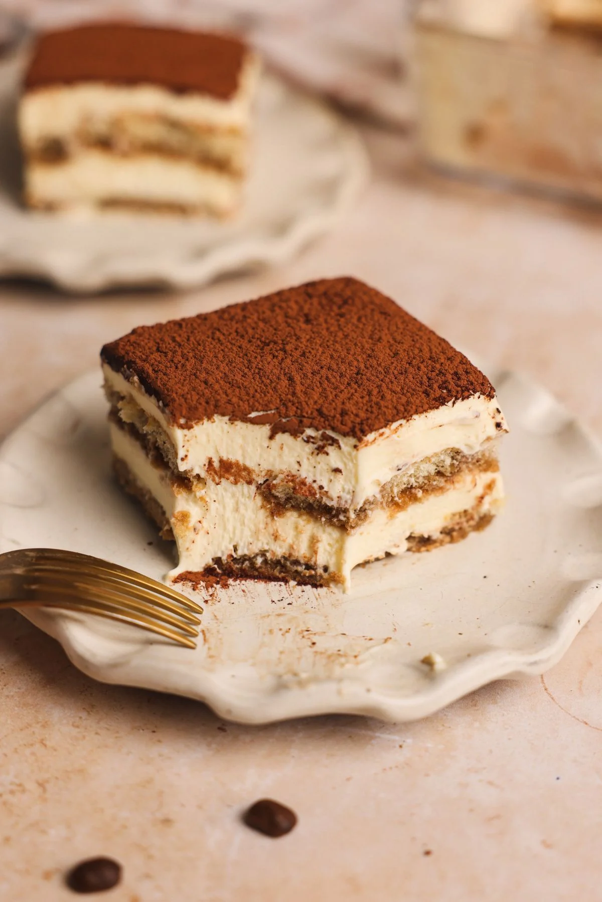

Tiramisu

Sta je tiramisu?
Tiramisu je čuveni italijanski desert napravljen od piškota umočenih u kafu i nežne penaste kreme od žumanaca kuvanih na pari, mascarpone sira i slatke pavlake.
Sastojci
- 6 jaja
- 500 g mascarpone sira
- 250 g šećera
- 400 g piškota
- 3 dcl crne kave
- 1 žličica aroma vanilije
- Kakao u prahu
Priprema
- Za početak skuhajte oko 3 dcl turske kave. Zasladite ju po ukusu i pustite da se hladi. Za to vrijeme napravit ćemo kremu.
- Razdvojite bjelanjca od žumanjaca i vodite računa da koristite svježa jaja pošto ona neće biti termički obrađena.
- U prvoj posudi od bjelanjaca mikserom istucite čvrsti snijeg.
- U drugoj posudi mikserom pomiješajte žumanjca i šećer, zatim dodajte mascarpone sir i aromu vanilije dok se sastojci ne sjedine.
- Sastojke iz druge smjese dodajte bjelanjcima i lagano miješajte špatulom kako bi smjesa ostala lagana i 'prozračna'.
- Dno tepsije premažite s tankim slojem kreme (tek toliko da se piškote zalijepe).
- Piškote umočite u ohlađenu kavu. Pripazite da ih umočite do pola na oko 2 sekunde kako se ne bi raspale. Piškote slažite u tepsiju dok ne prekrijete dno. Zatim gornju stranu piškota poškropite s vrlo malo kave. Na taj način piškote će zadržati svoju strukturu i neće se previše raskvasiti.
- Dodajte polovicu kreme i prekrijte piškote, a zatim dodajte još jedan red piškota prema gore opisanom postupku. Drugi red piškota prekrijte s ostatkom kreme.
- Tiramisu pospite kakaom u prahu, prekrijte folijom i stavite u hladnjak da se hladi preko noći.
- Uzivajte!
Home